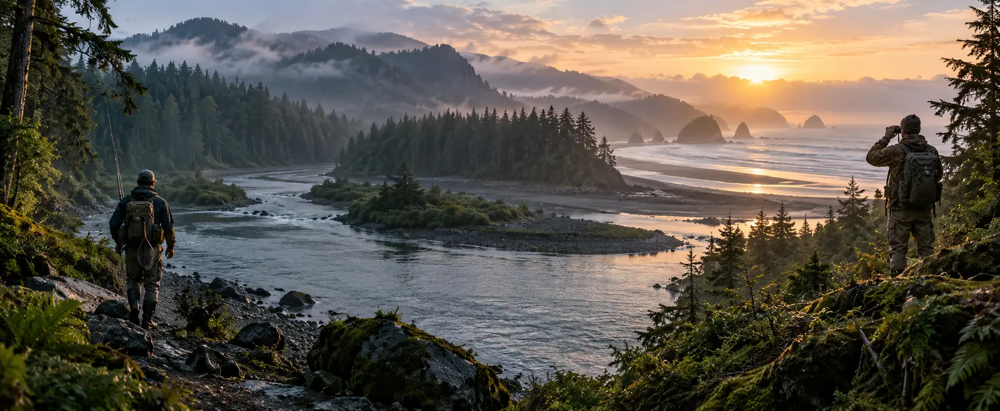

Fishing
Freshwater and saltwater rods, reels, line, rigs, lures, bait, tackle boxes, knives, rainwear and fish-finding tech.
See fishing gearFreshwater or saltwater, we help you choose the right rods, reels, line, lures and tackle without wasting money on gear you don't need.

Fishing and hunting belong together—but shoppers should never have to dig through a mixed pile of gear to find what fits their trip.
Freshwater and saltwater rods, reels, line, rigs, lures, bait, tackle boxes, knives, rainwear and fish-finding tech.
See fishing gearWeather-ready clothing, packs, storage, optics, navigation, headlamps, field knives and practical accessories.
See hunting gearStart with where you fish. Water type changes the right rod, reel, line, terminal tackle, tools and storage.
Current eBay categories: use these practical starting points.
Compare grip, corrosion resistance, blade purpose, cutters, split-ring jaws and safe storage.
Compare current eBay listingsChoose strength, visibility, stretch and abrasion resistance for your water, cover and target species.
Compare current eBay listingsStart with local forage, depth and conditions—then narrow hooks, weights, jigs, plugs and soft plastics.
Compare current eBay listingsCompare tray layout, water resistance, corrosion-resistant hardware, carry comfort and room for tools.
Compare current eBay listingsCompare display, depth capability, transducer setup, power source, portability and included accessories.
Compare fish finders on eBayLook for durable waterproof construction, room for layers, adjustable straps and useful pockets.
Check current eBay optionsWeather, distance, terrain and trip length should drive the gear—not a giant list of random products.
Compare magnification, field of view, low-light performance, waterproofing, weight and dependable navigation.
Compare current eBay listingsMatch capacity, access, frame support, hydration and rain protection to the length and terrain of the trip.
Compare current eBay listingsCompare blade purpose, steel, grip, cleaning, corrosion resistance and a secure sheath. Follow local laws.
Compare current eBay listingsUseful for hands-free setup. Compare runtime, brightness, low-light modes, weight, charging and weather resistance.
See current eBay listingsCompare weather protection, hood coverage, mobility, noise, ventilation and room for warm layers underneath.
Shop current eBay optionsKeep electronics, tools, spare layers and essentials organized with easy access and dependable water resistance.
Compare current eBay listingsUse this chart before clicking into listings so you can narrow the options faster.